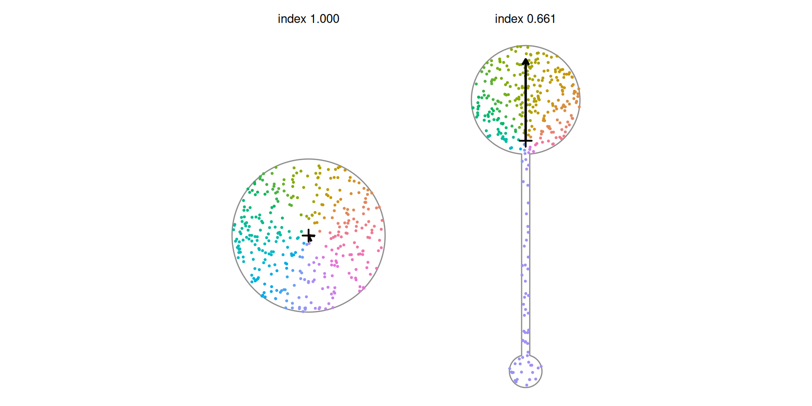

Code
library(shapeindices)
library(sf)
library(ggplot2)
theme_set(theme_minimal(base_size = 11))
theme_gallery <- theme_void(base_size = 10) +
theme(strip.text = element_text(size = 9, face = "bold"))2026-07-22
Source:vignettes/g-understanding-directional-balance-index.qmd
library(shapeindices)
library(sf)
library(ggplot2)
theme_set(theme_minimal(base_size = 11))
theme_gallery <- theme_void(base_size = 10) +
theme(strip.text = element_text(size = 9, face = "bold"))
square <- st_polygon(list(rbind(c(0,0), c(10,0), c(10,10), c(0,10), c(0,0))))
make_regular_ngon <- function(n, r = 1, center = c(0, 0)) {
ang <- seq(0, 2*pi, length.out = n + 1)[1:n]
st_polygon(list(rbind(cbind(center[1] + r*cos(ang), center[2] + r*sin(ang)), center + c(r, 0))))
}
hexagon <- make_regular_ngon(6, 5)
disk <- st_buffer(st_sfc(st_point(c(0, 0))), dist = 5.64, nQuadSegs = 60)[[1]]
make_star <- function(n_points, r_outer = 1, r_inner = 0.5, center = c(0, 0)) {
n <- n_points * 2
angles <- seq(pi/2, pi/2 + 2*pi, length.out = n + 1)[1:n]
radii <- rep(c(r_outer, r_inner), n_points)
x <- center[1] + radii * cos(angles); y <- center[2] + radii * sin(angles)
st_polygon(list(rbind(cbind(x, y), c(x[1], y[1]))))
}
star6 <- make_star(6, 5, 2.5)
make_dumbbell <- function(r_top, r_bottom, cy = 10) {
top <- st_buffer(st_sfc(st_point(c(0, cy))), r_top, nQuadSegs = 40)
bottom <- st_buffer(st_sfc(st_point(c(0, -cy))), r_bottom, nQuadSegs = 40)
neck <- st_polygon(list(rbind(c(-0.3,-cy), c(0.3,-cy), c(0.3,cy), c(-0.3,cy), c(-0.3,-cy))))
st_make_valid(st_union(st_sfc(c(top[[1]], bottom[[1]], neck))))[[1]]
}
dumbbell_sym <- make_dumbbell(3, 3) # equal lobes
dumbbell_asym <- make_dumbbell(4, 1.2) # unequal lobesdirectional_balance_index() measures whether a (multi)polygon’s own mass is spread evenly across every bearing from its centroid, or leans toward some bearings more than others. Concretely: is the magnitude of the mean resultant vector of , where is the angle of point as seen from the shape’s own mass centroid - and the index is , in .
What this index uses - and what it deliberately ignores. Unlike moment_of_inertia_index() and moment_isotropy_index(), which integrate position squared, this index uses only the bearing , never the distance. Distance would carry no information here anyway: is the mass centroid by definition, so the raw first moment of position, , is identically zero for every shape. discards distance and keeps only direction, and that is precisely what makes the quantity informative - it asks whether the shape’s own area, bearing by bearing, is spread evenly around the centroid or piled up toward some directions. One reading to guard against: balanced does not mean uniform. says the directional pulls cancel, not that mass is spread evenly across every bearing - “Things to watch out for” in the Illustrations section below shows exactly a shape where that distinction matters.
For density over the polygon, a point with coordinates , and mass centroid , define - the bearing of as seen from - and
This is exactly the mean resultant length from circular/directional statistics (Rayleigh 1880’s test for uniformity on a circle is built on the same quantity1), here applied to a polygon’s own interior angular mass distribution rather than to literal directional data like wind bearings. That specific application - bearings of interior area from a shape’s own mass centroid, rather than literal directional observations - doesn’t appear to have an established name in the shape-compactness literature the rest of this package draws from (see vignette("d-understanding-span-index")’s Introduction); treat it as a direct application of a classical tool to a new setting, not a rediscovery of a named index. directional_balance_index() is .
Each interior point contributes a unit arrow pointing along its own bearing from the centroid - distance discarded, direction kept. is the length of the average of all those unit arrows. When the bearings are spread evenly the arrows cancel and (index ); when the mass leans one way they reinforce and grows toward 1 (index toward 0). The figure colours sample points by their bearing and draws the resulting average arrow from the centroid:

The disk’s bearings fill every direction evenly, the unit arrows cancel, and the average arrow collapses to essentially nothing - index . The lopsided dumbbell’s mass leans toward its bigger (upper) lobe, so its arrow is long and points that way, dropping the index. The arrow’s direction is mean_angle; its length (relative to a fully one-directional shape) is .
by the triangle inequality on a complex-valued expectation: . That is the entire proof - no reference shape, no rearrangement inequality (the argument behind convexity_index()/span_index()/radial_concentration_index()’s bounds), no matrix fact (the argument behind moment_isotropy_index()’s). It also holds for any probability measure over bearings - continuous, or a finite weighted point cloud alike - so the discrete estimates both computation modes below produce respect the bound exactly, for any mesh and any sample size, not just approximately or in the limit.
// are polynomial in the vertex coordinates - dividing by radius to get a pure bearing breaks that structure, so over a triangle has no closed form. directional_balance_index() is genuinely approximate in both modes, the same situation convexity_index()/span_index()/radial_concentration_index() are in (not moment_of_inertia_index()/moment_isotropy_index(), which are exact regardless of mode). One practical consequence, visible directly:
directional_balance_index(st_sfc(square))$index # vertex-exact symmetric shape[1] 1
directional_balance_index(st_sfc(disk))$index # curve approximated by 240 segments[1] 0.9996764The square scores exactly 1 (its mesh happens to be perfectly mirror-symmetric), while the segment-approximated disk lands a hair below. The gap is quadrature resolution, and refining the internal subdivision drives it to zero:
| subdivision_depth | R | index |
|---|---|---|
| 0 | 0.185176 | 0.814824 |
| 2 | 0.019378 | 0.980622 |
| 4 | 0.000324 | 0.999676 |
| 6 | 0.000036 | 0.999964 |
| 8 | 0.000002 | 0.999998 |
A disk approximated by straight boundary segments is, in the continuous limit, exactly balanced () - but a CDT of a many-sided polygon isn’t necessarily triangulated with perfect reflection symmetry, so a small residual survives at shallow subdivision depth. This is ordinary discretization error, and it shrinks predictably as depth increases. directional_balance_index() uses depth 4 by default (the same area-adaptive depth radial_concentration_index() uses), so expect a disk to score very close to, but not bit-for-bit exactly, 1 - anything within about of 1 should be read as “balanced”.
| shape | name | directional_balance | moment_isotropy | moment_of_inertia |
|---|---|---|---|---|
| square | 1.000 | 1.000 | 0.955 | |
| hexagon | 1.000 | 1.000 | 0.992 | |
| disk | 1.000 | 1.000 | 1.000 | |
| star | 0.999 | 1.000 | 0.851 | |
| symmetric_dumbbell | 1.000 | 0.022 | 0.111 | |
| asymmetric_dumbbell | 0.661 | 0.074 | 0.218 |
moment_isotropy_index() is a second-moment/axis-preference measure - does the mass prefer an axis, agnostic to which end of it - while directional_balance_index() is a first-harmonic/direction-preference measure - does the mass lean toward one bearing specifically. The symmetric dumbbell is the cleanest case where they diverge: low isotropy (it strongly prefers the north-south axis) but perfect directional balance (it doesn’t prefer north over south, or vice versa). A shape “pointing north” and its mirror image “pointing south” would score identically on moment_isotropy_index() but oppositely on directional_balance_index()’s own mean_angle (not on index itself, which reports only magnitude).
No separate reference shape means no separate weighted derivation - the resultant vector is computed directly from whatever weight substitutes for triangle area, exactly like moment_isotropy_index().
prep <- prepare_polygon(st_sfc(dumbbell_sym))
tri <- prep$tri
cen <- st_coordinates(st_centroid(st_geometry(tri)))
w_top <- ifelse(cen[, 2] > 0, 3, 1) # 3x weight on the top lobe, still symmetric-shape but not symmetric-mass
plain <- directional_balance_index(st_sfc(dumbbell_sym), prep = prep)
weighted <- directional_balance_index(st_sfc(dumbbell_sym), prep = prep, weight = w_top)
data.frame(
weighting = c(weight_thumb(tri, rep(1, nrow(tri))), weight_thumb(tri, w_top)),
name = c("uniform (area)", "3x weight on top lobe"),
index = c(plain$index, weighted$index),
mean_angle_deg = c(NA, weighted$mean_angle * 180 / pi)
) |> knitr::kable(format = "html", digits = c(NA, NA, 3, 1), escape = FALSE)| weighting | name | index | mean_angle_deg |
|---|---|---|---|
| uniform (area) | 1.000 | NA | |
| 3x weight on top lobe | 0.549 | 90 |
The shape’s own boundary never changes here - a geometrically symmetric dumbbell - but concentrating mass in the top lobe alone breaks the angular cancellation, dropping the index and pointing mean_angle north, toward the heavier lobe.
res_sym <- directional_balance_index(st_sfc(dumbbell_sym))
res_asym <- directional_balance_index(st_sfc(dumbbell_asym))
data.frame(
shape = c(shape_thumb(dumbbell_sym), shape_thumb(dumbbell_asym)),
name = c("symmetric dumbbell (equal lobes)", "asymmetric dumbbell (top lobe bigger)"),
R = c(res_sym$R, res_asym$R),
index = c(res_sym$index, res_asym$index),
mean_angle_deg = c(NA, res_asym$mean_angle * 180 / pi)
) |> knitr::kable(format = "html", digits = c(NA, NA, 6, 4, 1), escape = FALSE)| shape | name | R | index | mean_angle_deg |
|---|---|---|---|---|
| symmetric dumbbell (equal lobes) | 0.000000 | 1.0000 | NA | |
| asymmetric dumbbell (top lobe bigger) | 0.339384 | 0.6606 | 90 |
The symmetric dumbbell scores index = 1 - two equal masses on opposite bearings from cancel exactly in the complex sum, regardless of how badly dispersed the shape is along its own axis. Compare moment_of_inertia_index() and span_index(), both of which score this shape poorly (it’s about as far from a disk as a shape this compact can get):
data.frame(
shape = shape_thumb(dumbbell_sym),
name = "symmetric dumbbell",
directional_balance = res_sym$index,
moment_isotropy = moment_isotropy_index(st_sfc(dumbbell_sym))$index,
moment_of_inertia = moment_of_inertia_index(st_sfc(dumbbell_sym))$index,
span = span_index(st_sfc(dumbbell_sym))$index
) |> knitr::kable(format = "html", digits = 3, row.names = FALSE, escape = FALSE)| shape | name | directional_balance | moment_isotropy | moment_of_inertia | span |
|---|---|---|---|---|---|
| symmetric dumbbell | 1 | 0.022 | 0.111 | 0.374 |
Making the two lobes unequal breaks the cancellation: the bigger lobe pulls more area to bear in its own direction from the (still centrally located) centroid, dropping the index to 0.661 with mean_angle pointing toward it (the bigger lobe sits due north; mean_angle reads 90.0 degrees, atan2 convention).
This is a feature, not purely a limitation. Paired with moment_of_inertia_index()/span_index()/moment_isotropy_index() (all of which score the symmetric dumbbell badly), the two families together distinguish “symmetric two-sided reach” - fine here, bad on the others - from “one-sided reach” - bad on both. That distinction is plausibly relevant to redistricting analysis: a district extending outward in one direction only reads differently from one extending outward symmetrically in two, even though both can look equally “dispersed” by a single distance-based measure.
deterministic = FALSE draws points directly from the weighted density (the same mechanism radial_concentration_index() uses) and computes over the sample, with measured relative to the exact centroid (found in closed form regardless of mode). Because is the magnitude of a sample-mean vector - a nonlinear transform - Jensen’s inequality means : for a truly balanced shape, is essentially never exactly 0 in a finite sample, so the Monte Carlo index sits systematically slightly below the true value. The gap shrinks as n_lines grows:
gap <- function(n) 1 - directional_balance_index(st_sfc(square), deterministic = FALSE,
n_lines = n, seed = 1)$index
ns <- c(200, 1000, 5000, 20000)
data.frame(n_lines = ns, gap_from_1 = vapply(ns, gap, numeric(1))) |> knitr::kable(format = "html", digits = 5)| n_lines | gap_from_1 |
|---|---|
| 200 | 0.10057 |
| 1000 | 0.03775 |
| 5000 | 0.02571 |
| 20000 | 0.00792 |
The returned index carries this bias uncorrected, because it cannot be fixed on its own scale: no unbiased estimator of exists for any finite sample. The obstruction is the kink of at exact balance - the same structural reason a sample standard deviation cannot be unbiased even though a sample variance can - and it sits at , exactly where the bias is worst, which is also where asymptotic corrections (whose leading term carries a ) diverge.
What does admit an exactly unbiased estimate is the same quantity on a squared scale, - same range, same direction, same shapes scoring exactly 1. Because the sampled bearings are i.i.d., for any two distinct draws, which makes
exactly unbiased for , for every weight distribution and every - computable in one line from the returned R and your own n_lines. Two things to know if you use it: it can land slightly above 1 for near-balanced shapes - necessarily, since no estimator confined to can be unbiased at the boundary - and truncating it back to 1 would reintroduce the bias, so leave it be. And since squaring compresses the top of the scale (real near-balanced shapes crowd into on ), treat it as a tool for unbiased estimation and batch averaging, not as a more readable index. If you just want a better point estimate of itself, increase n_lines or use deterministic = TRUE, which carries no statistical bias at all.
directional_balance_index() adds a genuinely new question to this package’s family: not “is this shape convex” (convexity_index(), hull_ratio_index()), “how far is mass dispersed from the centre” (moment_of_inertia_index(), span_index(), radial_concentration_index()), “how round is the boundary/bounding shape” (polsby_popper_index(), reock_index(), width_length_ratio_index()), or “does the mass distribution prefer an axis” (moment_isotropy_index()) - but “does the mass distribution prefer a bearing”. See vignette("j-nc-counties-comparison") for how it relates to the other nine on 100 real county boundaries.
directional_balance_index() is , where is the magnitude of the mean resultant vector of unit bearings seen from the mass centroid - a first-harmonic, direction-preference measure, not a dispersal measure: distance from the centroid never enters the definition.moment_isotropy_index() uses, but no closed form exists for either computation mode - both deterministic = TRUE (subdivision-based quadrature) and deterministic = FALSE (Monte Carlo) are genuinely approximate, unlike the exact moment family.moment_of_inertia_index()/span_index()/moment_isotropy_index(), all of which score that same shape badly, to catch what it misses.moment_isotropy_index()’s is: there’s no reference shape to re-derive, so a weighted index is just the resultant vector computed directly from whatever weight substitutes for triangle area.deterministic = FALSE carries a small, structural, uncorrectable-on-its-own-scale bias toward higher apparent imbalance, worst exactly at true balance () - a consequence of being a magnitude, not an average, so Jensen’s inequality bites. deterministic = TRUE (the default) carries no such bias; use n_lines in the tens of thousands if you need deterministic = FALSE to average out the gap instead.moment_isotropy_index()’s axis-preference question.